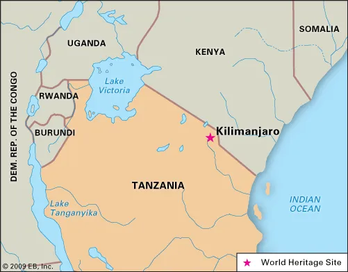

Історія
Перша згадка про ці засніжені гори відноситься до II століття
н. е. Вони позначені на географічній карті
Птолемея. Пізніше, у XIII і XIV століттях, про неї повідомляли
китайські мореплавці, які торгували зі
східним узбережжям Африки.
Але датою відкриття Кіліманджаро
вважається 11 травня 1848 року, а автором
відкриття — німецький пастор Йоганнес Ребманн (Johannes
Rebmann, 1820—1876). У 1861 році підкорена висота
2500 м, в 1862 році досягнута відмітка 4200 м, в 1883, 1884 і
1887 — позначка 5270 м, і всі ці сходження
було здійснено графом Телкі. 5 жовтня 1889 року німецький
альпініст Ганс Майєр (Hans Meyer, 1858—1929) і
його австрійський провідник Людвіг Пуртшелер (Ludwig
Purtscheller, 1849—1900) вперше досягли вершини. В
1996 році в Марангу ще був живий їхній товариш по сходженню з
народу чага — Мзеє Лауво, якому повинно
було бути понад 120 років. Мавензі була підкорена лише в 1912
році Охлером і Клутьє.
Походження назви
Назва походить з мови суахілі і, ймовірно, означає «гора, яка
виблискує».
Точно не відомо, як саме утворилася назва Кіліманджаро, на цей
рахунок існує кілька теорій[3]. Багато з
цих теорій припускають, що слово розбивається на Kilima (на
суахілі «пагорб, маленька гора») і Njaro[4],
у якого версії варіюються від стародавнього слова суахілі
білий або блискучий[5] до слова мови Кічагга
jaro, що означає караван. Недолік цих теорій полягає в тому,
що вони не можуть пояснити, чому
використовується зменшувальне слово kilima замість належного
для гори mlima. Інший підхід має на увазі,
що назва походить зі слова мови Кічагга kilemanjaare або
kilemajyaro, що означає «той, хто перемагає
птицю/леопарда/караван». Однак ця теорія не пояснює факт, що
сама назва Кіліманджаро не використовувалася
в мові Кічагга до недавнього часу[3].
Географія
Розташування

Кіліманджаро височить у північно-східній Танзанії на 5 891,8
метрів згідно з вимірюваннями, проведеними в
2008 році за допомогою системи GPS і ґравітації, замінивши
попереднє значення в 5 895 метрів отримане в
1952 році командою британців. Висота, яка була предметом
вимірювань з 1889 року, з результатами, що
різнилися більш ніж на сто метрів, є найбільшою в Африці і,
отже, Кіліманджаро є однією з Семи Вершин.
Він розташований недалеко від кордону з Кенією, який проходить
по північних і східних схилах гори. Вона
височіє посеред рівнинної савани, яка оточує гору у формі
краплі на 4 800 — 5 200 метрів, що робить цю
гору найвищою ізольованою горою у світі. Кіліманджаро займає
площу в 388 500 гектарів. Гора є вулканічним
комплексом овальної форми, простягається на 70 км з північного
заходу на південний схід і на 50
кілометрів з північного сходу на південний захід і знаходиться
за 340 км на південь від екватору. Гора
Меру розташована за 75 км на південний захід, а гора Кенія,
другий за висотою пік в Африці, за 300
кілометрів на північ. Найближче місто, Моші, знаходиться в
Танзанії на південь від гори, і є головною
відправною точкою для сходження на неї. Міжнародний аеропорт
Кіліманджаро, розташований в п'ятдесяти
кілометрах на південний захід від вершини, обслуговує з 1971
року весь регіон зі всіма його парками.
Додома, столиця Танзанії, і Дар-ес-Салам, знаходяться
відповідно за 380 км на південний захід і 450 км на
південний схід, тоді як Найробі знаходиться всього за 200 км
на північ-північ-захід. Узбережжя
Індійського океану — за 270 км від гори. Адміністративно
Кіліманджаро знаходиться в регіоні Кіліманджаро,
що частково охоплює райони Гай (англ. Hai), Моші Рурал (англ.
Moshi Rural) і Ромбо (англ. Rombo), де
знаходиться найвища точка, і більша частина гори. Вулкан
цілком включений в Національний парк
Кіліманджаро.
Топографія
Кіліманджаро є стратовулканом загалом конічної форми. Він
складається з трьох основних вершин, які також
є згаслими вулканами: Шира на заході з 3 962 м над рівнем
моря, Кібо 5 891,8 з метрами висоти в центрі і
Мавензі з 5 149 метрами висоти на сході. Кібо вінчається у
верхній частині еліптичною кальдерою 2,4 км в
ширину і 3,6 км в довжину, що оточує кратер з назвою Кратер
Ройш (англ. Reusch Crater) і діаметром 900
метрів, в центрі якого стоїть конус попелу 200 метрів в
діаметрі, який називають Аш Піт (англ. Ash Pit).
Основний пік, розташований на південній околиці кратера,
називається Угуру (англ. Uhuru). Іншими відомими
точкам Кібо є Внутрішній Конус (англ. Inner Cone) на висоті
5835 метрів, Точка Ганса Майєра (англ. Hans
Meyer Point), Точка Ґілмана (англ. Gilman's Point), Леопардова
точка (англ. Leopard Point) та ущелина
Йогана (англ. Yohanas' Notch), названа на честь провідника,
який супроводжував перше сходження на гору.
На південному заході вершини близько 100 000 років тому
великий зсув створив Західний Пролом (англ.
Western Breach), що височіє на долиною Барранко (англ.
Barranco Valley). Мавензі іноді вважається третьою
за висотою вершиною в Африці після гори Кенії. Вона сильно
пошкоджена ерозією і тепер має вигляд дамби,
який відділяється від піків Ганса Мейера, Пуртшеллера (англ.
Purtscheller Peak), Південного (англ. South
Peak) та Нордекла (англ. Nordecke). Від їх основи його
відділяють у східному напрямку відділяють багато
розщелин, зокрема Велика та Мала Барранко (англ. Great
Barranco, Lesser Barranco). Сідло (англ. The
Saddle) — плато площею 3600 га між Мавензі і Кібо. Шира, від
якої відділяється Точка Джонселла (англ.
Johnsell Point), складається з половини розколотого кратера,
від якого залишилися тільки південний та
західний краї. На північний схід від нього, на 6200 гектарах,
гора має форму плато. Близько 250 менших
конусів знаходяться по обидві сторони від цих трьох піків на
осі північний захід/південний схід.
Гідрологія
Льодова шапка Кіліманджаро обмежується вершиною Кібо. У 2003
році вона покривала територію загальною
площею 2 км². Вона складається з льодовика Фюртванглера (англ.
Furtwängler) у верхній частині, льодовиків
Дрігальський (англ. Drygalski), Великий Пенк (англ. Great
Penck), Малий Пенк (англ. Little Penck),
Пенгальський (англ. Pengalski), Льортшер Нотч (англ. Lörtscher
Notch) та Креднер (англ. Credner) на
північному льодовому полі (англ. Northern Icefield),
льодовиків Барранко (англ. Barranco)(або Малий та
Великий Розломи (англ. Little Breach, Big Breach)), Стріла
(англ. Arrow) та Уліг (англ. Uhlig) на заході,
льодовиків Балетто (англ. Balletto), Діамант (англ. Diamond),
Хайм (англ. Heim), Керстен (англ. Kersten),
Декен (англ. Decken), Ребман (англ. Rebmann) і Ратцель (англ.
Ratzel) на південному льодовому полі (англ.
Southern Icefield) і, нарешті, східного льодового поля (англ.
Eastern Icefield). Географічна мінливість
опадів і сонячного світла пояснює різницю в розмірах між
різними льодовими полями.
Цю шапку було колись добре видно, але зараз вона знаходиться в
процесі швидкого танення. Вона охоплювала
площу 12,1 км² у 1912 році, 6,7 км² у 1953 році, 4,2 км² в
1976 році і 3,3 км² в 1996 році. Протягом
двадцятого століття, вона втратила 82 % своєї площі[6]. Вона
втратила в середньому 17 метрів товщини між
1962 і 2000 роками. Вона стає все більш розрідженою і повинна
повністю зникнути до 2020 року, за оцінками
експертів і NASA палеокліматолога Лонні Томпсона (англ. Lonnie
Thompson), професор університету Огайо,
або до 2040 року згідно з розрахунками наукової групи з
австрійського університету Інсбрук, або до 2050
за висновками Каліфорнійської академії наук. Лід на деяких
схилах може триматися ще кілька додаткових
років через відмінності в місцевих кліматичних умовах.
Геологія
Тектоніка
Під час юрського і крейдяного періодів в області, що
відповідає нинішньому Кіліманджаро, відбувається
ерозія. Саме тому плато складається з докембрійських гнейсу і
грануліту. Місцевість поступово
сплощується: на півночі і сході формуються рівнини, на
північному заході і південному сході з'являються
останці, кристалічні наноси видаляються на південь від
Палеоцену.
Велика рифтова долина, яка проходить через Східну Африку з
півночі на південь, утворюється в міоцені з
початком відділення сомалійської плити від африканської. В
області, що відповідає східній гілці цього
розколу, розломи з'являються в пліоцені і починають
накопичуватися алювіальні наноси, що покривають
велику частину останців. Розломи сприяють відкриттю грабенів і
підйому магми. Кіліманджаро, як і гора
Меру, виник на грабені, який пройшов у напрямку з
захід-північ-захід на схід-південь-схід формуючи
гребінь Амбозелі (англ. Amboseli).
Гороутворення
Вулканізм Кіліманджаро почався в пліоцені і утворення всієї
конструкції відбувалося в чотири великі
етапи, під час яких в цілому виділилося 5 000 км³ вулканічної
породи. Останні три сформували пов'язані
стратовулкани, які стали основою Шири, Кібо і Мавензі. Розкол,
що проходив через них у напрямку з
захід-північ-захід на схід-південь-схід, також призвів до
утворення численних супутніх конусів,
розділених, приблизно, на вісім зон. Деякі вулканічні жерла,
розташовані на вершині, могли були активні
під час Голоцену.
Маршрути на Кіліманджа́ро
- Марангу — з південної сторони
- Мачаме — з південної сторони
- Умбве — з південної сторони
- Ронгаї — єдиний з північної сторони
- Лемошо — з західної сторони
- Шіра — з західної сторони
- Мвека — тільки для спуску